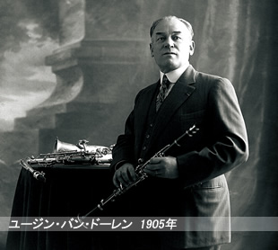

バンドーレンの歴史
1905年からバンドーレン家はマウスピースとリードを作っています。
ユージン・バン・ドーレンは19世紀末、ベル・エポックの時代に、パリ・オペラ座のクラリネット奏者でした。
この時代は管楽器奏者自らがリードを手作りする時代で、出来上がりはまちまちでした。
ユージン・バン・ドーレンはきっとコツを知っていたに違いありません。
彼の手工リードで演奏するととても良い音が出たので、同僚たちは彼に頼んで作ったものを売ってもらっていたほどでした。
しかし、リードを手作りするのは時間がかかり単調で退屈な仕事です。腕が良く才能あるエンジニアだったユージンは、時間を短縮するために特別なリード製造機械をデザインし製造しました。
これはミシンと同じ方法で動く、足踏み式のものでした。アンドレ・デル・サルテ通りにあった彼の家のダイニング・ルームにこの機械を持ち込んで作ったリードはたちまち大人気となり、1905年（息子の生まれた年）にはルピック通り51番地にリード製造所を設立し、それからすぐに彼はクラリネットを演奏するよりももっと多くの時間をリード製作に費やすようになりました。
息子のロベールもクラリネットを学び、パリ音楽院を卒業しました。
演奏家としての経験を積むため、1928年にフランスを出てアメリカへ1年の演奏旅行に出かけ、そこで彼の美しいサウンドが注目されるようになりました。
彼はニューヨークのラジオシティ・ミュージックホールで演奏した、初めてのフランス人クラリネット奏者の一人となりました。アメリカ人のミュージシャンがバンドーレン・リードの素晴らしさを初めて知ったのはこの演奏旅行中で、バンドーレン・リードの人気が急上昇しました。
会社が大きくなるにつれ、ロベール・バン・ドーレンは父と同じように、演奏するよりもリード作りにより時間を割くようになってきました。
まもなく彼が会社の経営を引き継ぎ、1935年には現在の住所であるルピック通り56番地の土地を購入しました。
ロベール・バン・ドーレンが自分で開発した5RVマウスピースの販売を始めたのはこのころで、この有名なモデルは今でも多くのミュージシャンの間で大変な人気です。
ロベールの息子のベルナールも祖父ゆずりの技術者としての才能に恵まれ、1967年に会社に入り、家業も三代目に入りました。
ベルナールの指揮の下、新しいマウスピースのシリーズが開発され、ベーシックモデルとなったB45もすぐに5RVと同じように良く知られるようになりました。
ベルナール・バン・ドーレンも父や祖父と同じ製造方針をとり、非常に洗練された機械類を開発しました。
それにより製造の際の許容誤差を1mmの100分の１以下にまで減らすことに成功し、しかも生産高を10倍にも高めることができました。
1990年には、モンマルトルのふもとにあった作業場を、原料のケーンの産地である南フランスのボルム・レ・ミモザに移転しました。
パリの社有地には、オフィスは残したものの再開発を行い、フランス国内その他から訪れるミュージシャンたちのためのテスト施設や練習室、またクラリネットとサクソフォン用の楽譜専門のショップ、「エスパス・パルティシオン」が作られました。